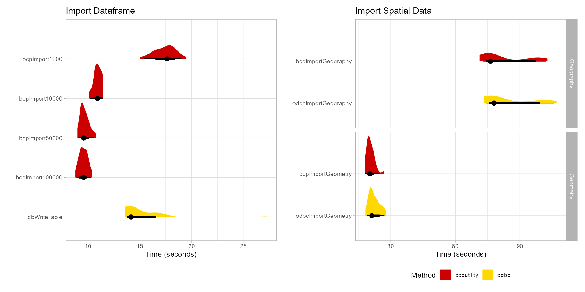

bcputility is a wrapper for the command line utility program from SQL Server that does bulk imports/exports. The package assumes that bcp is already installed and is on the system search path. For large inserts to SQL Server over an ODBC connection (e.g. with the “DBI” package), writes can take a very long time as each row generates an individual insert statement. The bcp Utility greatly improves performance of large writes by using bulk inserts.
An export function is provided for convenience, but likely will not significantly improve performance over other methods.
Installation
You can install the released version of bcputility from CRAN with:
install.packages("bcputility")Install the development version with:
devtools::install_github("tomroh/bcputility")If bcp and sqlcmd is not on the system path or you want to override the default, set the option with the full file path:
Benchmarks
Benchmarks were performed with a local installation of SQL Server Express. When testing with a remote SQL Server, performance of bcp over odbc was further improved.

Import
library(DBI)
library(data.table)
library(bcputility)
server <- Sys.getenv('MSSQL_SERVER')
database <- Sys.getenv('MSSQL_DB')
driver <- 'ODBC Driver 17 for SQL Server'
set.seed(11)
n <- 1000000
importTable <- data.frame(
int = sample(x = seq(1L, 10000L, 1L), size = n, replace = TRUE),
numeric = sample(x = seq(0, 1, length.out = n/100), size = n,
replace = TRUE),
character = sample(x = state.abb, size = n, replace = TRUE),
factor = sample(x = factor(x = month.abb, levels = month.abb),
size = n, replace = TRUE),
logical = sample(x = c(TRUE, FALSE), size = n, replace = TRUE),
date = sample(x = seq(as.Date('2022-01-01'), as.Date('2022-12-31'),
by = 'days'), size = n, replace = TRUE),
datetime = sample(x = seq(as.POSIXct('2022-01-01 00:00:00'),
as.POSIXct('2022-12-31 23:59:59'), by = 'min'), size = n, replace = TRUE)
)
connectArgs <- makeConnectArgs(server = server, database = database)
con <- DBI::dbConnect(odbc::odbc(),
Driver = "SQL Server",
Server = server,
Database = database)
importResults <- microbenchmark::microbenchmark(
bcpImport1000 = {
bcpImport(importTable,
connectargs = connectArgs,
table = 'importTable1',
bcpOptions = list("-b", 1000, "-a", 4096, "-e", 10),
overwrite = TRUE,
stdout = FALSE)
},
bcpImport10000 = {
bcpImport(importTable,
connectargs = connectArgs,
table = 'importTable2',
bcpOptions = list("-b", 10000, "-a", 4096, "-e", 10),
overwrite = TRUE,
stdout = FALSE)
},
bcpImport50000 = {
bcpImport(importTable,
connectargs = connectArgs,
table = 'importTable3',
bcpOptions = list("-b", 50000, "-a", 4096, "-e", 10),
overwrite = TRUE,
stdout = FALSE)
},
bcpImport100000 = {
bcpImport(importTable,
connectargs = connectArgs,
table = 'importTable4',
bcpOptions = list("-b", 100000, "-a", 4096, "-e", 10),
overwrite = TRUE,
stdout = FALSE)
},
dbWriteTable = {
con <- DBI::dbConnect(odbc::odbc(),
Driver = driver,
Server = server,
Database = database,
trusted_connection = 'yes')
DBI::dbWriteTable(con, name = 'importTable5', importTable, overwrite = TRUE)
},
times = 30L,
unit = 'seconds'
)
importResults| expr | min | lq | mean | median | uq | max | neval |
|---|---|---|---|---|---|---|---|
| bcpImport1000 | 15.017385 | 16.610868 | 17.405555 | 17.656265 | 18.100990 | 19.44482 | 30 |
| bcpImport10000 | 10.091266 | 10.657926 | 10.926738 | 10.916577 | 11.208184 | 11.46027 | 30 |
| bcpImport50000 | 8.982498 | 9.337509 | 9.677375 | 9.571526 | 9.896179 | 10.77709 | 30 |
| bcpImport100000 | 8.769598 | 9.303473 | 9.562921 | 9.581927 | 9.855355 | 10.36949 | 30 |
| dbWriteTable | 13.570956 | 13.820707 | 15.154505 | 14.159002 | 16.378986 | 27.28819 | 30 |
Time in seconds
Export Table
Note: bcp exports of data may not match the format of fwrite. dateTimeAs = 'write.csv' was used to make timings comparable, which decreased the performance of “data.table”. Optimized write formats for date times from fwrite outperforms bcp for data that is small enough to be pulled into memory.
exportResults <- microbenchmark::microbenchmark(
bcpExportChar = {
bcpExport('inst/benchmarks/test1.csv',
connectargs = connectArgs,
table = 'importTableInit',
fieldterminator = ',',
stdout = FALSE)
},
bcpExportNchar = {
bcpExport('inst/benchmarks/test2.csv',
connectargs = connectArgs,
table = 'importTableInit',
fieldterminator = ',',
stdout = FALSE)
},
fwriteQuery = {
fwrite(DBI::dbReadTable(con, 'importTableInit'),
'inst/benchmarks/test3.csv', dateTimeAs = 'write.csv',
col.names = FALSE)
},
times = 30L,
unit = 'seconds'
)
exportResults| expr | min | lq | mean | median | uq | max | neval |
|---|---|---|---|---|---|---|---|
| bcpExportChar | 2.565654 | 2.727477 | 2.795670 | 2.756685 | 2.792291 | 3.352325 | 30 |
| bcpExportNchar | 2.589367 | 2.704135 | 2.765784 | 2.734957 | 2.797286 | 3.479074 | 30 |
| fwriteQuery | 7.429731 | 7.602853 | 7.645852 | 7.654730 | 7.703634 | 7.868419 | 30 |
Time in seconds
Export Query
query <- 'SELECT * FROM [dbo].[importTable1] WHERE int < 1000'
queryResults <- microbenchmark::microbenchmark(
bcpExportQueryChar = {
bcpExport('inst/benchmarks/test4.csv',
connectargs = connectArgs,
query = query,
fieldterminator = ',',
stdout = FALSE)
},
bcpExportQueryNchar = {
bcpExport('inst/benchmarks/test5.csv',
connectargs = connectArgs,
query = query,
fieldterminator = ',',
stdout = FALSE)
},
fwriteQuery = {
fwrite(DBI::dbGetQuery(con, query),
'inst/benchmarks/test6.csv', dateTimeAs = 'write.csv',
col.names = FALSE)
},
times = 30L,
unit = 'seconds'
)
queryResults| expr | min | lq | mean | median | uq | max | neval |
|---|---|---|---|---|---|---|---|
| bcpExportQueryChar | 0.3444491 | 0.4397317 | 0.4557119 | 0.4490924 | 0.4615573 | 0.7237182 | 30 |
| bcpExportQueryNchar | 0.3305265 | 0.4444705 | 0.4412670 | 0.4500690 | 0.4605971 | 0.4815894 | 30 |
| fwriteQuery | 0.6737879 | 0.7141933 | 0.7421377 | 0.7311998 | 0.7548233 | 0.9143555 | 30 |
Time in seconds
Import Geometry
Importing spatial data from ‘sf’ objects is also supported. The sql statements after import are to produce equivalent tables in the database.
library(sf)
nc <- st_read(system.file("gpkg/nc.gpkg", package = "sf"))
divN <- 10
shp1 <- cbind(nc[sample.int(nrow(nc), n / divN, replace = TRUE),],
importTable[seq_len(n / divN), ],
id = seq_len(n / divN))
geometryResults <- microbenchmark::microbenchmark(
bcpImportGeometry = {
bcpImport(shp1,
connectargs = connectArgs,
table = 'shp1',
overwrite = TRUE,
stdout = FALSE,
spatialtype = 'geometry',
bcpOptions = list("-b", 50000, "-a", 4096, "-m", 0))
},
odbcImportGeometry = {
con <- DBI::dbConnect(odbc::odbc(),
driver = driver,
server = server,
database = database,
trusted_connection = 'yes')
tableName <- 'shp2'
spatialType <- 'geometry'
geometryColumn <- 'geom'
binaryColumn <- 'geomWkb'
srid <- sf::st_crs(nc)$epsg
shpBin2 <- data.table(shp1)
data.table::set(x = shpBin2, j = binaryColumn,
value = blob::new_blob(lapply(sf::st_as_binary(shpBin2[[geometryColumn]]),
as.raw)))
data.table::set(x = shpBin2, j = geometryColumn, value = NULL)
dataTypes <- DBI::dbDataType(con, shpBin2)
dataTypes[binaryColumn] <- 'varbinary(max)'
DBI::dbWriteTable(conn = con, name = tableName, value = shpBin2,
overwrite = TRUE, field.types = dataTypes)
DBI::dbExecute(conn = con, sprintf('alter table %1$s add %2$s %3$s;',
tableName, geometryColumn, spatialType))
DBI::dbExecute(conn = con,
sprintf('UPDATE %1$s
SET geom = %3$s::STGeomFromWKB([%4$s], %2$d);
ALTER TABLE %1$s DROP COLUMN [%4$s];', tableName, srid, spatialType,
binaryColumn)
)
},
bcpImportGeography = {
bcpImport(shp1,
connectargs = connectArgs,
table = 'shp3',
overwrite = TRUE,
stdout = FALSE,
spatialtype = 'geography',
bcpOptions = list("-b", 50000, "-a", 4096, "-m", 0))
},
odbcImportGeography = {
con <- DBI::dbConnect(odbc::odbc(),
driver = driver,
server = server,
database = database,
trusted_connection = 'yes')
tableName <- 'shp4'
spatialType <- 'geography'
geometryColumn <- 'geom'
binaryColumn <- 'geomWkb'
srid <- sf::st_crs(nc)$epsg
shpBin4 <- data.table(shp1)
data.table::set(x = shpBin4, j = binaryColumn,
value = blob::new_blob(lapply(sf::st_as_binary(shpBin4[[geometryColumn]]),
as.raw)))
data.table::set(x = shpBin4, j = geometryColumn, value = NULL)
dataTypes <- DBI::dbDataType(con, shpBin4)
dataTypes[binaryColumn] <- 'varbinary(max)'
DBI::dbWriteTable(conn = con, name = tableName, value = shpBin4,
overwrite = TRUE, field.types = dataTypes)
DBI::dbExecute(conn = con, sprintf('alter table %1$s add %2$s %3$s;',
tableName, geometryColumn, spatialType))
DBI::dbExecute(conn = con,
sprintf('UPDATE %1$s
SET geom = %3$s::STGeomFromWKB([%4$s], %2$d);
ALTER TABLE %1$s DROP COLUMN [%4$s];', tableName, srid, spatialType,
binaryColumn)
)
DBI::dbExecute(conn = con,
sprintf(
'UPDATE %1$s SET [%2$s] = [%2$s].MakeValid().ReorientObject().MakeValid()
WHERE [%2$s].MakeValid().EnvelopeAngle() > 90;',
tableName, geometryColumn))
},
times = 30L,
unit = 'seconds'
)
geometryResults| expr | min | lq | mean | median | uq | max | neval |
|---|---|---|---|---|---|---|---|
| bcpImportGeometry | 18.01451 | 19.48747 | 20.68834 | 20.45136 | 21.74212 | 26.87033 | 30 |
| odbcImportGeometry | 18.29721 | 20.63363 | 22.35044 | 21.29087 | 24.04490 | 27.81112 | 30 |
| bcpImportGeography | 71.23260 | 75.04588 | 82.65286 | 76.36985 | 96.68469 | 102.70909 | 30 |
| odbcImportGeography | 73.29818 | 76.12481 | 84.58432 | 77.93419 | 97.36155 | 107.00186 | 30 |
Time in seconds